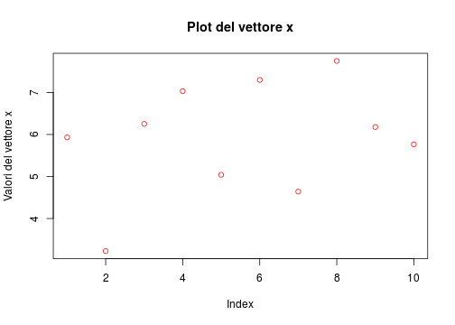
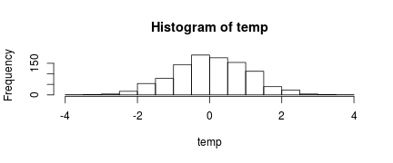
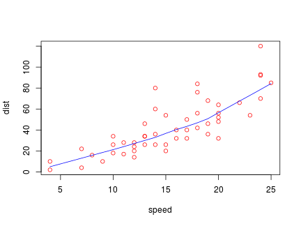
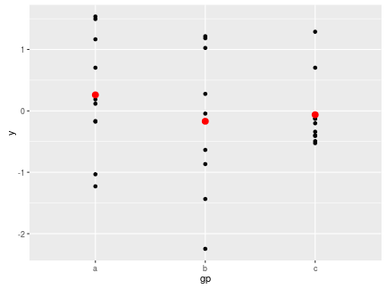
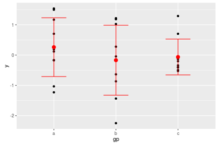

Introduzione all'ambiente di programmazione $R$
Linux Day - Biella 2016
P. Scordino
Sommario

I dati

La curva d'apprendimento

L'ambiente \(R\)
L'ambiente \(R\) è caratterizzato da una console, dove vengono digitati i comandi, un workspace, dove vengono memorizzati tutti gli oggetti creati e un editor di testo che permette di scrivere una serie di comandi in sequenza e salvarli in un file nomefile.R chiamato script.
\(R\) memorizza due file .Rdata e .Rhistory nella directory di lavoro, il primo contiene tutti gli oggetti creati durante la sessione di lavoro ossia memorizza il workspace, il secondo contiene la lista dei comandi usati nella stessa sessione di lavoro.
L'ambiente \(R\)
RGui per Windows

L'ambiente \(R\)
RStudio GUI multipiattaforma

Perchè usare \(R\) ?
- Libero, per usarlo non c'è bisogno di comprare nessuna licenza.
- Open source, a codice aperto, chiunque può esaminare il codice e modificarlo per effettuare migliorie.
- Modulabile, esistono più di 6000 packages raggruppati nel CRAN, con funzioni che trovano applicazione in svariati campi, che possono essere installati ampliando le già notevoli potenzialità di \(R\).
- Customizzabile, chiunque può crearsi funzioni o addirittura packages su misura a seconda delle proprie esigenze.
- Multipiattaforma, può essere installato su computer con diversi SO.
- Comunità/Supporto, \(R\) ha dietro una grossa comunità online di utilizzatori e sviluppatori che mettono a disposizione la loro esperienza a tutti, attraverso newsletter, forum, blog, siti.
Perchè usare \(R\) ?
Sul sito r4stat.com è stato pubblicato un interessante articolo sulla popolarità dei vari software usati nell'ambito dell'elaborazione dei dati, di seguito riporto due grafici riassuntivi.


Gli oggetti di \(R\):
Scalari numerici
Gli scalari sono semplicemente delle variabili a cui è stato assegnato un valore che può essere numerico, logico, character(stringa).
x<- 14
y<- 23
x
## [1] 14
y
## [1] 23
Gli oggetti di \(R\):
Scalari logici
a<- TRUE
b<- FALSE
class(a)
## [1] "logical"
a==b
## [1] FALSE
Gli oggetti di \(R\):
Scalari character (stringhe)
n<- "Pasquale"
c<- "Scordino"
class(n)
## [1] "character"
n_c<- paste(n,c)
n_c
## [1] "Pasquale Scordino"
Gli oggetti di \(R\):
I vettori
I vettori sono una seguenza monodimensionale di valori, con indice [i] che come per gli scalari possono essere numeri, logici e character (stringhe). Anche sui vettori si possono effettuare una serie di manipolazioni come per gli scalari.
x<- c(23,44,55,33,66,21,32,45,65)
y<- c(TRUE,FALSE,TRUE,TRUE)
z<- c("A","B","C")
x<- runif(10, 1, 10)
x
## [1] 5.929770 3.224951 6.251041 7.031660 5.040180 7.297447 4.639945
## [8] 7.750485 6.176635 5.763871
Gli oggetti di \(R\):
I vettori
plot(x, main = "Plot del vettore x" ,ylab = "Valori del vettore x", col="red")

Gli oggetti di \(R\):
Le matrici
Le matrici possono essere considerate un insieme di vettori che vanno a formare una griglia di valori numerici bidimensionale con indici [i,j]
m.1<- matrix(1:25, 5, 5)
m.1
## [,1] [,2] [,3] [,4] [,5]
## [1,] 1 6 11 16 21
## [2,] 2 7 12 17 22
## [3,] 3 8 13 18 23
## [4,] 4 9 14 19 24
## [5,] 5 10 15 20 25
Gli oggetti di \(R\):
Gli array
Gli array sono un insieme di matrici che formarmano un cubo o un parallelepipedo di valori numerici tridimensionali con indici [i,j,z]
m.1<- array(1:8, c(1,4,2))
m.1
## , , 1
##
## [,1] [,2] [,3] [,4]
## [1,] 1 2 3 4
##
## , , 2
##
## [,1] [,2] [,3] [,4]
## [1,] 5 6 7 8
Gli oggetti di \(R\):
Gli array
m.2<- array(1:16, c(2,4,2))
m.2
## , , 1
##
## [,1] [,2] [,3] [,4]
## [1,] 1 3 5 7
## [2,] 2 4 6 8
##
## , , 2
##
## [,1] [,2] [,3] [,4]
## [1,] 9 11 13 15
## [2,] 10 12 14 16
Gli oggetti di \(R\):
I Dataframe
I dataframe sono delle matrici che possono contenere vettori di tutti i tipi, numerici, character (stringhe), logici
L3 <- LETTERS[1:3]
L<- sample(L3, 7, replace = TRUE)
data.frame(1, 1:7, L)
## X1 X1.7 L
## 1 1 1 C
## 2 1 2 B
## 3 1 3 C
## 4 1 4 B
## 5 1 5 B
## 6 1 6 A
## 7 1 7 C
Gli oggetti di \(R\):
Le liste
Le liste sono dei vettori che possono contenere tutti i tipi di oggetti (vettori, matrici, array, dataframe, liste)
L<- list(1:3, LETTERS[1:3], 5:6)
L
## [[1]]
## [1] 1 2 3
##
## [[2]]
## [1] "A" "B" "C"
##
## [[3]]
## [1] 5 6
Input/Output in \(R\):
I principali comandi per importare dataset dentro l'ambiente \(R\) sono:
# read.csv()
# read.table()
I principali comandi per esportare dataset elaborati fuori l'ambiente \(R\) sono:
# write.csv()
# write.table()
Funzioni personalizzate in \(R\):
\(R\) da la possibilità di costruire funzioni personalizzate che potrebbero non essere presenti nei packages di base o in quelli raccolti nel CRAN
f<- function(x, y){
z <- x^2 + y^2;
x+y+z }
f(0:7, 1)
## [1] 2 4 8 14 22 32 44 58
Funzioni personalizzate in \(R\):
normistmed <- function(quantinevuoi){
temp <- rnorm(quantinevuoi)
hist(temp)
mean(temp)
}
normistmed(1000)

## [1] 0.02883393
Le strutture di controllo (cicli) in \(R\):
x <- y <- c(1:3)
for (i in 1:length(x)){
y[i] <- log(x[i])
print(y[i])}
## [1] 0
## [1] 0.6931472
## [1] 1.098612
y <- log(x)
y
## [1] 0.0000000 0.6931472 1.0986123
Le strutture di controllo (cicli) in \(R\):
sapply(x, log)
## [1] 0.0000000 0.6931472 1.0986123
lapply(x, log)
## [[1]]
## [1] 0
##
## [[2]]
## [1] 0.6931472
##
## [[3]]
## [1] 1.098612
Le funzioni di plot in \(R\):
\(R\) ha una ricca quantità di funzioni e parametri per costruire qualsiasi tipo di grafico
require(stats) # for lowess, rpois, rnorm
plot(cars, col="red")
lines(lowess(cars), col="blue")

Le funzioni di plot in \(R\):
## Loading required package: ggplot2

Le funzioni di plot in \(R\):
ggplot() +
geom_point(data = df, aes(x = gp, y = y)) +
geom_point(data = ds, aes(x = gp, y = mean),
colour = 'red', size = 3) +
geom_errorbar(data = ds, aes(x = gp, y = mean,
ymin = mean - sd, ymax = mean + sd),
colour = 'red', width = 0.4)

Grafico interattivo
## Loading required package: rCharts
Risorse web

GRAZIE!!!